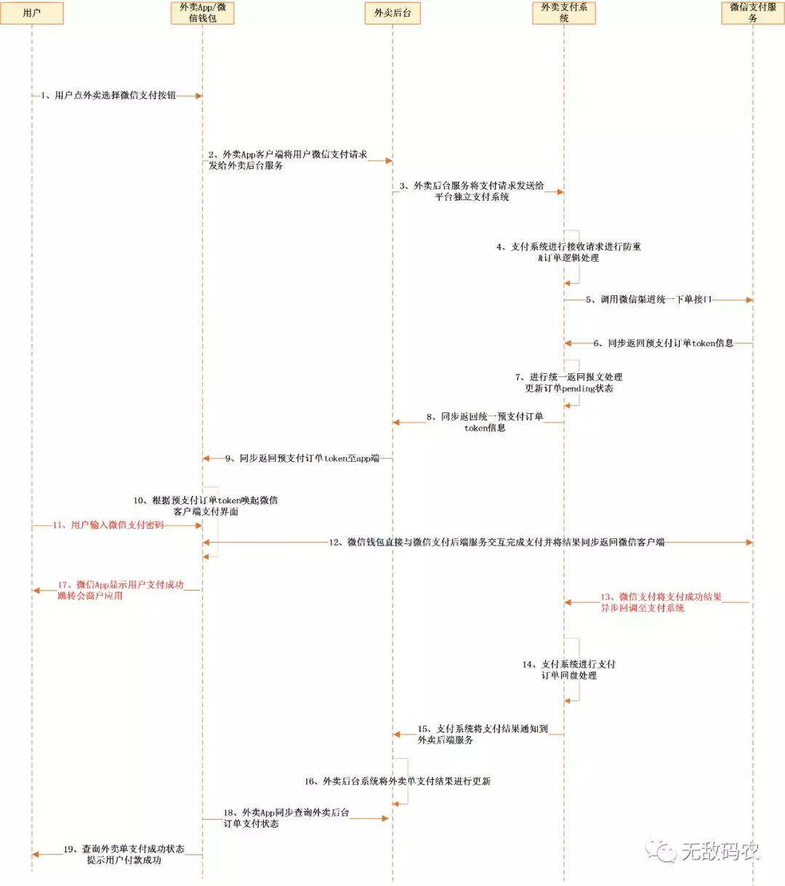
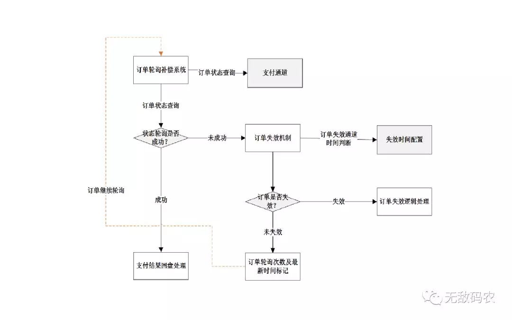
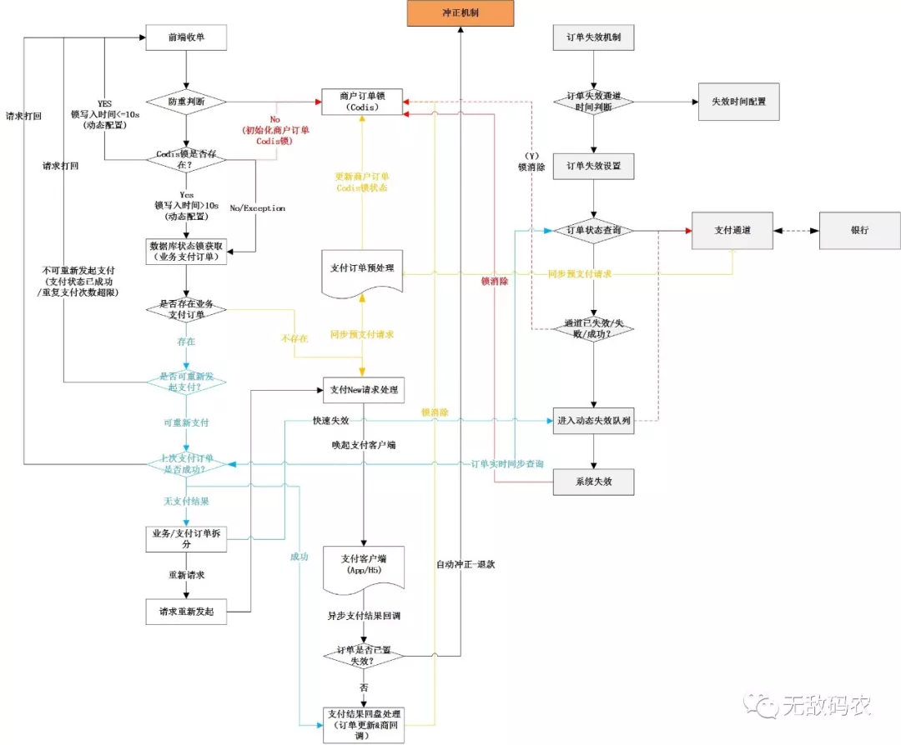

支付系统的防重设计
点击上方“程序员小灰”，选择关注公众号
有趣有内涵的文章第一时间送达！
导读
“目前在互联网应用的大部分支付场景中，对接支付宝、微信移动支付产品这样需要用户参与支付流程的支付方式已经变得非常普遍，类似的还有PC端银行网银支付；而通过绑定用户银行卡、对接银行卡快捷支付通道直接扣款的支付方式，虽然还在电商、保险、互联网金融、租房等行业被广泛应用，但是随着微信钱包、支付宝钱包这类移动互联网支付方式的兴起，用户规模的迅速增长，再加上用户银行卡信息安全、直连银行通道关闭等因素用户市场份额正在逐步减少”。
实际上，这种需要客户端参与支付流程的方式相比银行卡快捷支付直接扣款这类支付方式，在支付系统的流程及订单结构等设计上是存在较大差异的，其中订单的防重失效机制的设计更是一个比较棘手的问题。
参与过支付系统开发或在业务系统中开发支付功能的同学可能会遇到类似这样的业务需求：
用户在外卖网站或App上购买了点了一份外卖，并通过微信支付进行付款，系统在收到用户支付完成的消息后，提示用户付款成功并派单给餐馆？
初看这个问题，可能很多同学都会有疑问，这不是一个很简单的支付流程吗？大部分支付场景不都是这样的么？
其实是这样的，作为正常的支付流程来讲，上述场景并没有什么问题，在整个系统链运行稳定的情况下，可能大部分参与者并不会有什么感觉；但是，作为一个具备专业精神的小码农来说，还是有很多异常场景需要考虑的，不然就可能会因为系统流程上设计的缺陷而给公司和用户体验造成比较大的伤害。
那么上述需求中，会有什么样的异常场景呢？与支付系统防重失效机制的设计有什么关联？
我们可以先来看一下以上场景在系统流程中的运行情况（需要放大查看）：

在上面的流程中，虽然从用户角度看可能只是几秒钟的事情，但实际上整个系统链是经历了一个比较长的调用过程。具体如下：
-
用户在点外卖的过程中选择微信支付后，App会将支付请求发送给外卖后台系统，如果在整个外卖平台中，支付系统是一个独立的系统，则外卖业务后台服务会在生成业务订单后将支付请求发送给独立的“支付系统”进行处理；
-
此时支付系统作为独立的中间系统会处理外卖平台业务后台发送过来的支付请求，记录其业务订单号并生成对应支付系统自身的支付流水号，并对支付流水进行状态初始化（这里涉及一个业务订单号&支付订单号如何匹配问题，会在后面的讨论中阐述）；
-
支付系统调用微信统一下单接口进行预支付（这里的操作方式就是类网银式的支付方式，先进行预支付然后由用户跳到站外进行支付），并同步得到微信支付返回的预支付订单信息，支付系统此时需要更新支付订单为pending状态表示处于预支付状态；
-
然后支付系统将预支付信息同步给调用方—外卖业务后台，外卖业务后台再同步给外卖App；
-
外卖App会根据预支付订单信息通过客户端支付SDK唤起微信支付客户端，由用户操作微信支付客户端直接向微信支付发起付款动作，需要注意的是，此时调用链已经转移到了站外，实际上此时用户是否支付或是否支付成功，无论是支付系统还是外卖系统及App本身都是无法直接感知到支付结果的，需要逐层回调；
-
微信支付会通过循环调用的方式主动将支付结果回调给支付系统，再由支付系统回调给外卖业务系统，最后在用户直接感知前由App主动查询外卖业务系统订单支付状态，同时提示用户支付成功或支付处理中这样的信息；
从上面的流程可以了解到，实际上大家平时在通过App购物时支付的一瞬间是经历了很复杂的流程。那么，不知道在支付的过程中有没有这样的体验？
在点外卖后付款了，微信也提示支付成功了，但是外卖App却始终不显示点餐成功？即使选择重新支付也提示支付中，不允许重复支付？或者选择重新支付以后外卖App显示也显示点餐成功了，但是之前支付的钱却不见了，只能打客服投诉，各种麻烦？
上述问题，在目前支付流程的设计上是必然会发生的，目前作者所在的公司也有类似的问题，虽然这种问题发生的概率可能不是特别高，但是绝对是破坏用户体验以及增加了客服的工作量，处理得是否得当是衡量一套支付系统是否强大的核心指标之一。
那么怎样的设计才能很好地解决此类问题呢？
从流程上看用户选择微信支付并唤起微信钱包付款后，实际上外卖平台支付系统已经感知不到系统的状态了，也就说此时用户是否完成了支付，平台是无法同步感知的，只能依赖于微信的主动通知回调，一般来说目前主流的支付公司都有一套完整的商户通知逻辑，会在支付完成后实时通知到商户。
但是很多时候会有多种因素导致这种通知被延迟，比较常见的因素主要有网络、自身平台系统服务宕机、第三方渠道通知服务故障等。
也就说会有用户支付了点外卖的钱，系统却没有实时显示支付成功的问题，也就是我们常说的短时掉单问题；或者用户没有及时支付，重新付款时却会被提示“支付中请勿重复提交”，也就是支付防重问题。
对于掉单问题的处理，可以根据业务场景进行考虑，但无论是哪种方案，越快速补偿业务越能够有效地提升用户体验，减少系统异常处理流程，让防重机制更加灵敏，在避免重复支付问题的同时提高支付成功率。
另外，是否允许用户重复支付，如何利用冲正机制有效提高用户体验的同时快速保障用户权益，也是需要在整体方案中进行考虑的方面。
根据业务时效性要求不同，大致有两种方案：
异步补偿机制。
具体来说，就是支付流程按照正常的流程走，通过采用旁挂定时的方式扫描系统中一定时间策略范围内的pengding状态的订单，通过微信提供的订单查询接口主动轮询，一旦支付状态查询到终态即刻触发系统回调，完成支付订单及业务逻辑的补偿；
另一方面，如果pengding状态订单通过轮询方式没有查询到最终状态则需要设置一定的重复轮询策略，例如5分钟、10分钟、20分钟、1小时、3小时、8小时、24小时这样，并在超过策略规定的时间及轮询次数后将支付流水更新为失效终态，并提供订单查询接口供业务平台完成自身业务订单逻辑的更新。
系统示意图如下：

通过旁挂式的方式，支付主流程会变的相对简单，只需要考虑正常的收单场景，对于很多业务实时性不太高的支付场景，这种方式也够用。但对于业务实时性要求非常高，并且对用户体验有极致要求的场景来说，这种方式显然也是存在明显问题的。
我们还是拿点外卖这件事来说，外卖后台在接收到用户通过App发送的点餐支付请求后生成外卖订单并将支付请求发送给平台支付系统，支付系统一般来说会首先进行订单防重判断，即已经发起过的成功支付／支付中的请求不被允许发起第二次，支付成功的交易不允许重复发起。
但是等待支付或支付失败的交易很多公司内部支付系统都会被要求允许发起二次付款，在外卖点餐环节，如果用户点餐了但是并没有立刻进行支付或者支付由于某种原因失败了，是可以重新发起付款的，在这种情况下，支付系统就会面临一个问题，由于不知道在进行预支付后用户是否完成了支付，对于是否应该继续让用户发起支付请求，防重逻辑就会变的迟钝，如果允许用户支付则可能出现重复扣款的问题，不允许则会影响用户体验，为了让整个机制变得合理，所以需要依赖于上述系统的补偿机制来进行回盘或失效处理。
这里会遇到以下三种情况：
1、用户最终未支付，则系统安装一定的轮询机制进行后续的订单失效处理即可；
2、用户完成了支付，支付系统迟迟收不到微信的回调，通过逐步轮询的方式系统也会进行后续的订单回调补偿；但这里的问题是，如果异步补偿系统对订单的轮询不够及时（在支付订单量比较大的情况下，通过定时轮询的方式在时效性上较差），那么就会导致一个比较尴尬的情况，用户付完了钱，但是外卖订单很长时间显示未支付，无法进行派单，在轮询补偿系统完成回调后触发派单操作，但往往很可能已经过了饭点，并且很可能用户已经触发了申诉流程，外卖平台需要进行退款操作（增加客服工作量）；
3、则是用户当时并未及时支付，在订单失效前的某个时间，用户可能会选择重新付款，因为此时支付系统订单并未失效，会处于支付中状态，触发防重机制，无法再次发起付款；
对于2、3两种情况，如果需要很好的满足业务要求，就要提高支付系统时效性，提高订单防重失效、快速回盘的处理时间。要达到这样的效果，往往单纯的依赖旁挂式的处理方案是很难达到的，而是需要让实时支付流程的设计变得更加智能和灵敏。
实时支付流程优化设计
为解决上面的问题我们需要在实时支付流程中加入异常优化机制，从整个流程的设计上去解决，让整个支付系统变得更加智能和灵敏，虽然这种方式看似让支付主流程变得复杂了很多，但从优化用户体验、提高系统灵敏度的角度看，这种复杂度是值得的并且是可以通过技术细节屏蔽的。
那么具体应该怎样去设计这样的流程？
详细如图所示（需点击放大）:

如上图所示，支付系统接收到前端发起的支付请求，系统首先需要进行防重判断，这里为了有效地防止并发请求，采用Codis锁的方式,即一笔业务支付订单请求发送到支付系统后首先获取Codis全局锁，如果存在锁则说明订单正常被处理／未被正常处理，此时我们需要进行锁更新时间判断，如果锁的更新时间与系统当前时间差<=10s（可根据业务场景进行动态调整，即10s内同一笔商户订单号的支付请求不允许被多次发起），则很有可能此时系统正在处理这笔支付请求，应该正常进行防重处理；
相反，如果获取的Codis锁的更新时间与系统当前时间差>10s，则此时会存在两种情况，一种就是这笔支付订单没有被正常支付，是应该被允许重新发起支付的；另一种可能则是用户可能支付成功了，只是渠道在支付结果回调的过程中出了问题导致系统掉单。这两种情况混在一起，系统并不能立刻识别出到底属于何种情况。
这个问题是一个非常普遍和典型的问题，几乎很多公司都会遇到。
此时，支付系统有两种选择，一种选择是执行严格的防重策略，即要求所有对接支付平台的业务系统每次调用支付请求都必须生成不同的商户订单号，支付系统对于同一个订单号无论支付成功与否都不允许将此商户支付单号重复发送给支付平台，这种方案与第三方支付公司的接口约定一致。
这种防重策略粗暴简单，本质上是将逻辑的复杂性传到给了业务系统，也会让业务变的难受，如果支付平台在后期经历过重建，需要推动业务线切换的话，也往往会招致业务系统的反对。
那么如何让支付平台本身来屏蔽这种复杂的细节，让业务尽可能无感知？
两个订单号
-
商户订单号：业务系统发起的向支付系统发起支付请求是生成的在商户系统中唯一标识一笔订单的标记。
-
支付订单号：业务系统向支付系统发起支付请求后，支付平台本身生成的系统唯一标识一笔支付流水的标记，并且是支付系统与第三方支付渠道交互的唯一流水标识。
为了达到以上目标需要在支付系统内部采用1:3（举例）的订单模型，即1笔业务订单号可以对应支付系统3笔支付订单流水，并且每笔支付流水允许被发起的条件是上笔支付流水数据库订单状态是未支付成功，并且需要在当前这笔支付流水重新生成后将上笔支付流水放入订单动态实效队列，进行快速失效处理。
之所以采用以上方式，原因在于超过3次时间间隔超过30s（策略可以根据业务实践进行动态调整）还未完成支付的情况，系统基本可以认定属于恶意点击行为，可以直接拒绝此笔业务订单重新发起支付了。
需要动态将上笔支付订单快速置为实效的原因在于，我们需要在内部设定一个逻辑：“如果支付订单处于实效状态并在后面接收到了第三方支付成功的回调，则需要系统自动发起该笔支付订单的原路退款逻辑，并确保该笔订单不会被通知到商户侧”。这种现象之所以出现，在于我们为了提高系统的实时性允许了少量重复扣款的情况发生，并进行了自动冲正逻辑。
当然，在细节的处理上我们是在当前流水发起前对上笔流水已经进行了一轮订单实时查询，如果结果为支付成功，则此次请求会直接返回支付成功（或者，也可以提示已经支付成功，App主动查询支付系统的订单状态来完成回盘）。
如果当前订单再次预支付成功，在同步返回预支付结果前需要更新Codis中订单锁的时间及发起次数。同时，在接受到第三方正常的支付成功回调后完成订单状态更新及商户通知后消除Codis锁。
上述策略，为解决防重&二次支付问题提供了一种方案，当然还有很多细节的代码逻辑是需要考虑完善的，例如，实时查询超时的策略、退款的触发时间、用户提示等。
此外，如果用户不再选择再次发起付款，系统中的存量订单也需要通过文中早些时候介绍过的异步补偿机制逐步将进行失效处理（具体策略机制可参考图示及之前的概述），只是如果在异步补偿机制过程中发现掉单的订单，是否正常回盘或自动给用户退款，就需要具体情况具体分析了。
以上就是本文的全部内容了，在整个支付系统的搭建的过程中还有很多细节逻辑是可以优化的，需要根据具体业务进行实践与处理。鉴于经验和水平有限，不足之处，还请批评指正（可以直接在公众号进行评论交流哦 ）。
）。
最后赠送大家一个福利，
长按下图可参与抽奖，先到先得
喜欢本文的朋友们，欢迎关注订阅号程序员小灰，收看更多精彩内容
如果觉得无敌码农小哥在认真写文章，可以关注下公众号，支持下哦
文章转载自公众号